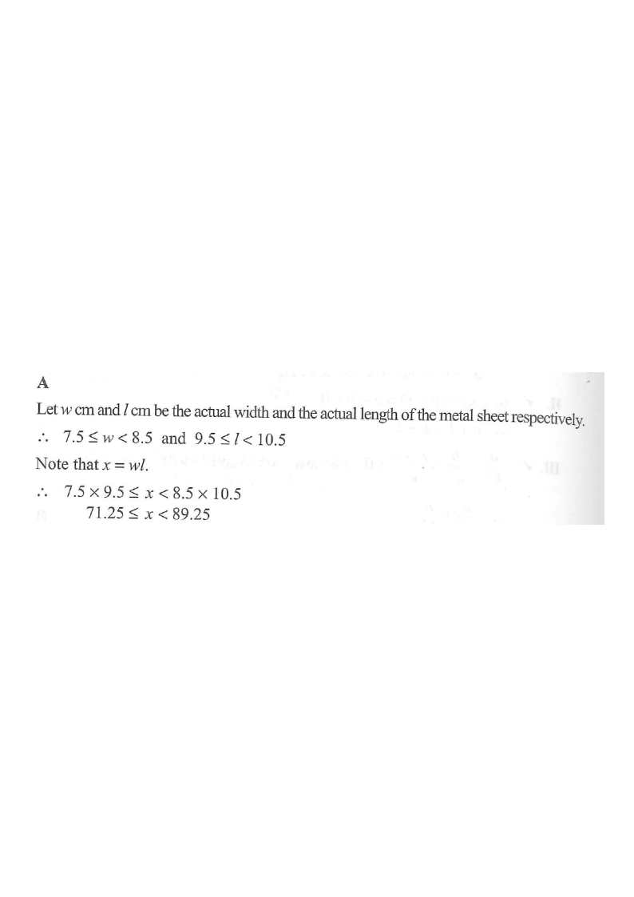

Step 1: measured width 8 cm, length 10 cm (to the nearest cm).
Topic 3: Estimation, Approximation and Error
The width and the length of a thin rectangular metal sheet are measured as 8 cm and 10 cm correct to the nearest cm respectively. Let $x\ \mathrm{cm}^2$ be the actual area of the metal sheet. Find the range of values of $x$.

“Correct to the nearest cm” means the maximum error is $\dfrac{1}{2}\ \mathrm{cm} = 0.5\ \mathrm{cm}$.
So each measured value $M$ represents the interval \[ M - 0.5 \;\le\; \text{actual} \;<\; M + 0.5. \]
Hint: the lower end is included ($\le$) and the upper end is excluded ($<$), because a value of exactly $M+0.5$ would round up to the next centimetre.
Let $w$ cm be the actual width and $l$ cm the actual length.
\[ 7.5 \;\le\; w \;<\; 8.5 \] \[ 9.5 \;\le\; l \;<\; 10.5 \]Hint: measured width $8 \Rightarrow 8\pm0.5$; measured length $10 \Rightarrow 10\pm0.5$.
The sheet is a rectangle, so
\[ x \;=\; w \times l. \]All quantities are positive, so multiplying the lower ends together gives the smallest possible area, and multiplying the upper ends together gives the largest possible area.
Hint: for positive numbers, the product of intervals keeps the same order — no sign flipping.
Lower end:
\[ 7.5 \times 9.5 \;=\; 71.25 \]Upper end:
\[ 8.5 \times 10.5 \;=\; 89.25 \]Therefore
\[ 71.25 \;\le\; x \;<\; 89.25. \]Our result $71.25 \le x < 89.25$ matches option D.
Hint: option A flips the inequality signs (a very common trap), and options B / C confuse the area range with a simple ±0.5 range around $80$.
Question. The length and the width of a rectangle are measured as \(12\text{ cm}\) and \(7\text{ cm}\) respectively, correct to the nearest cm. Which of the following is the range of the actual area \(x\)?
A. \(74.75\le x<93.75\) B. \(77.75\le x<90.75\) C. \(71.25\le x<89.25\) D. \(74.75